AI 활용은 두 갈래로 갈려요
발표자 브라이언은 낮에는 큰 기업 AI 연구소에서 조직의 AX(AI Transformation)를 맡고, 밤에는 브레인 트리니티라는 유튜브 채널을 운영해요. 발표는 세 단계로 짜여 있어요. 슬라이드의 세 칸이 순서대로 '지금 무슨 일이 일어나는가', '어떻게 쓰이고 있는가', '앞으로 무엇이 중요한가'예요.
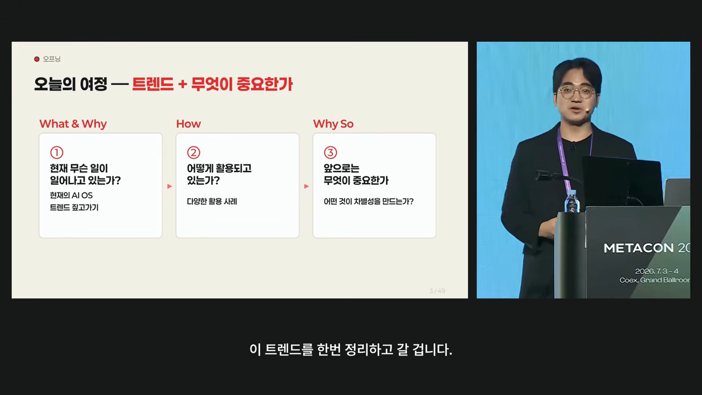
따라가기 벅찰 만큼 빠른 반년
발표자는 2025년 11월부터 2026년 6월까지를 한 장에 모아요. 왼쪽은 툴·에이전트(클로드 코드, 코덱스, 오픈클로, 헤르메스 에이전트)이고, 오른쪽 검은 칸은 같은 기간에 나온 모델 이름이에요. 발표자는 '페이블'이라는 모델이 너무 위험하다는 이유로 미국 정부가 수출을 통제해, 2주쯤 선택된 기관만 쓸 수 있었던 일도 언급해요.
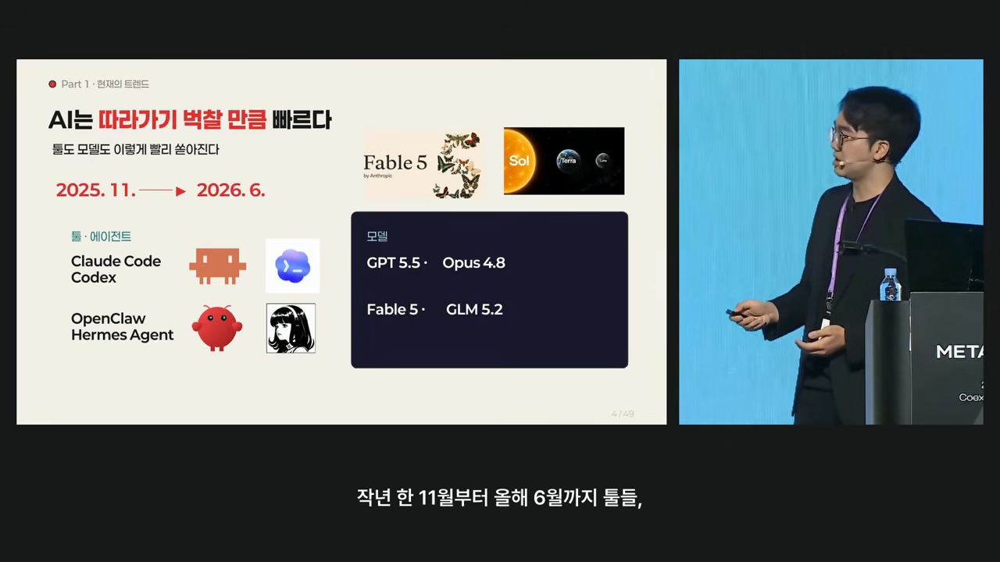
이 복잡한 흐름을 발표자는 두 갈래로 묶어요. 아래 두 버튼이 그 이름이에요. ① 만들기, ② 개인 비서예요.
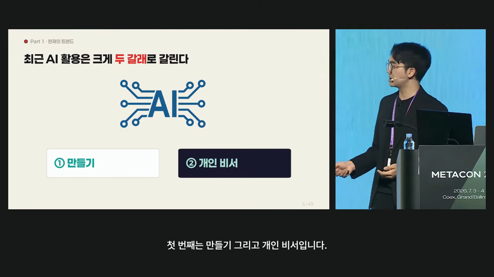
만들기: 코딩 도구가 지식노동 도구가 됐어요
왼쪽이 '원래', 오른쪽이 '현재는'이에요. 클로드 코드 아래에는 '2025년 2월 말 베타 출시, 5월 말 공개', 오른쪽 클로드 코워크 아래에는 '2025년 1월 출시'라고 적혀 있어요. 클로드 코드는 원래 내 컴퓨터의 파일을 직접 다뤄 코딩을 잘하려고 만든 도구였어요. 그런데 사람들이 이걸로 문서를 편집하고, 마케팅 전략을 세우고, PPT를 만들기 시작했다고 해요.
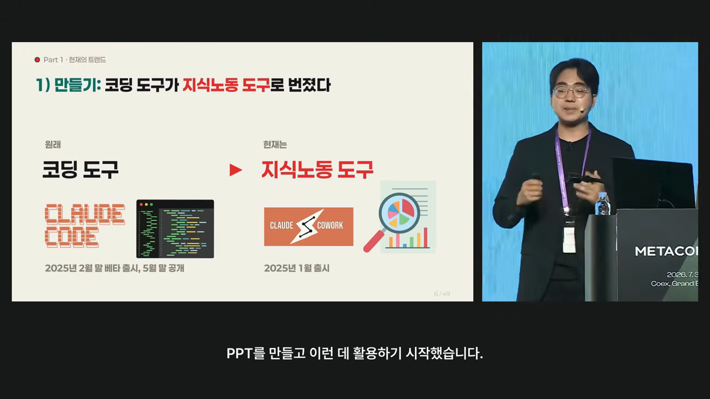
발표자는 이 현상을 당연하게 봐요. 슬라이드 제목처럼 문서도 속은 코드라서예요. 왼쪽 상자에는 DOC(Document)·PPT·XLS(Excel Spreadsheet)·MP4(MPEG-4 Part 14) 아이콘이 있고 '속을 들여다보면 결국 다 코드'라고 적혀 있어요. 오른쪽에는 '코드 한 줄로 PPT 끝' 같은 유튜브 영상 썸네일이 보여요.
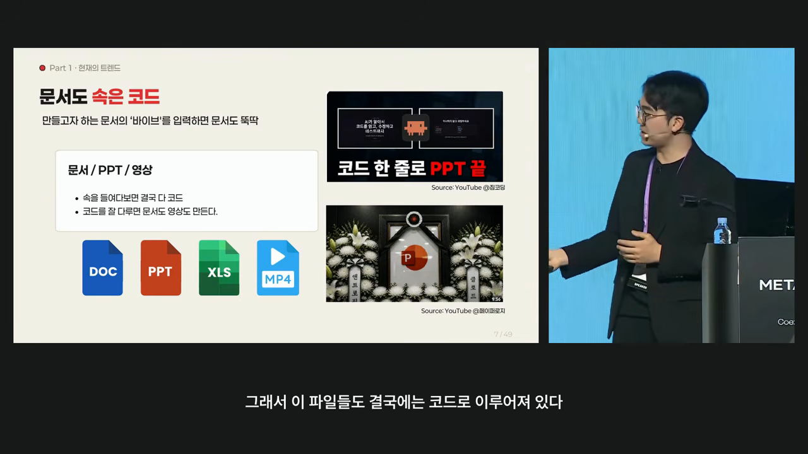
개인 비서와 LLM 위키
두 번째 갈래는 개인 비서예요. 슬라이드 왼쪽 검은 칸이 'PC · 게이트웨이 · 24시간 가동'이고, 가운데 텔레그램·디스코드·슬랙을 거쳐 오른쪽 '폰 · 어디서나 · 나만의 AI'로 이어져요. 오픈클로와 헤르메스 에이전트는 내 컴퓨터에 게이트웨이를 띄워 두고 메신저와 이어 줘요. 그래서 컴퓨터 앞에 없어도 휴대폰으로 나를 아는 AI를 부를 수 있어요.
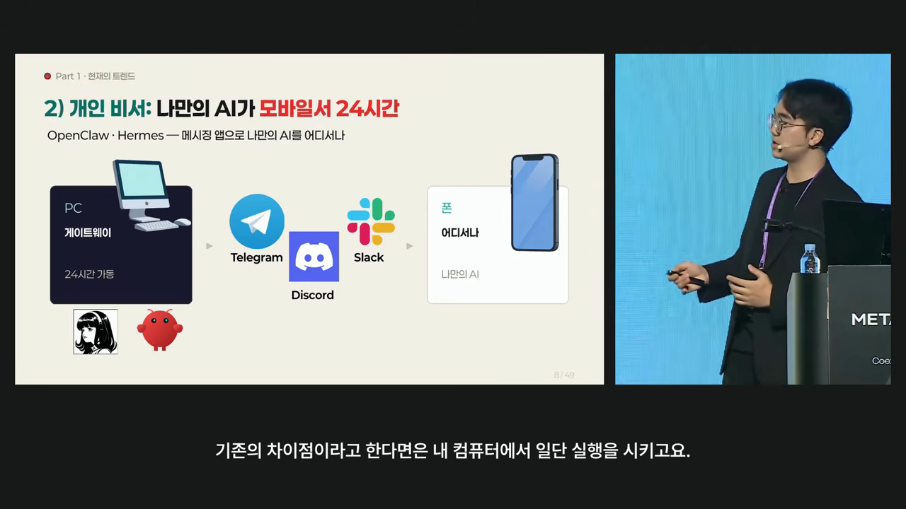
이 바람은 하드웨어로도 번졌어요. 슬라이드에는 '가성비 좋은 맥미니로 24시간 나를 아는 에이전트를?'과 '중국에서 1인 1 가재를 위해 1000명 대기'가 적혀 있어요. 발표자 말로는 89만 원이던 가장 싼 맥미니가 2월에 품절되고 130만 원까지 올랐다고 해요. '가재'는 오픈클로의 마스코트예요.
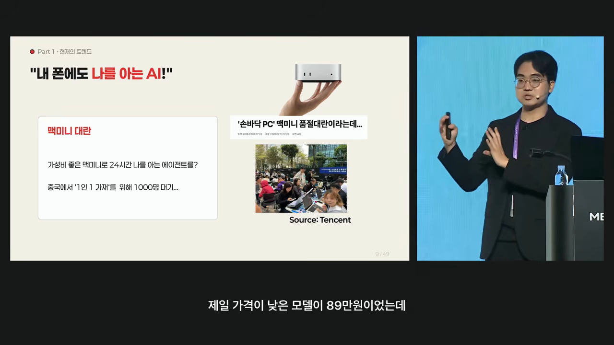
카파시가 불붙인 LLM 위키
여기에 불을 붙인 사람이 안드레 카파시예요. 슬라이드 가운데 상자에 '2026.04.04 · LLM Wiki'와 경력(오픈AI 공동창립자, 전 테슬라 AI 디렉터, 현 Anthropic)이 적혀 있고, 오른쪽은 그가 X에 올린 'LLM Knowledge Bases' 글이에요.
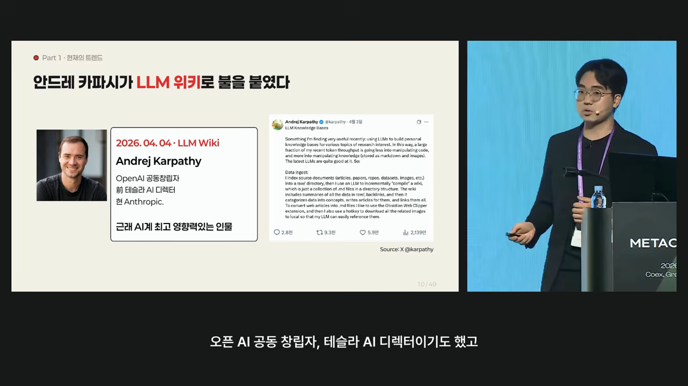
LLM(Large Language Model) 위키는 AI와 함께 편집하는 지식 베이스예요. PPT나 PDF(Portable Document Format)는 AI가 읽고 이해하기 어려운 형태예요. 그래서 슬라이드 왼쪽 'raw · 원본(수집한 자료)'을 AI에게 넘기면, AI가 이를 소화(ingest)해 오른쪽 '위키 · 지식그래프'로 만들어요. 위키 상자에는 '분해 + 연결 + 축적', '노드들이 서로 연결되며 계속 쌓인다'고 적혀 있어요.
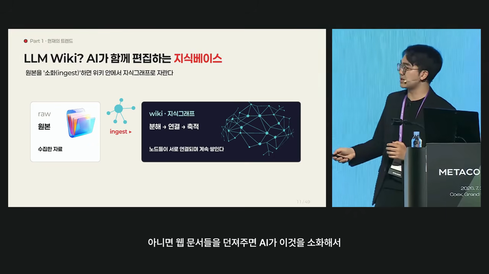
AI OS는 새로운 생각이 아니에요
발표자는 지금의 흐름을 두 축으로 정리해요. 왼쪽 초록 칸 'AI 모델'에는 '긴 기억력 + 히스토리', '뛰어난 성능', '자기 발전???(2026. 6. 4.)'이 있고, 아래에 '알잘딱깔센!'이라고 적혀 있어요. 오른쪽 빨간 칸 '지식'에는 '나의 고유 지식', '내가 쌓은 데이터, 도메인 지식, 암묵지/형식지'가 들어 있어요.
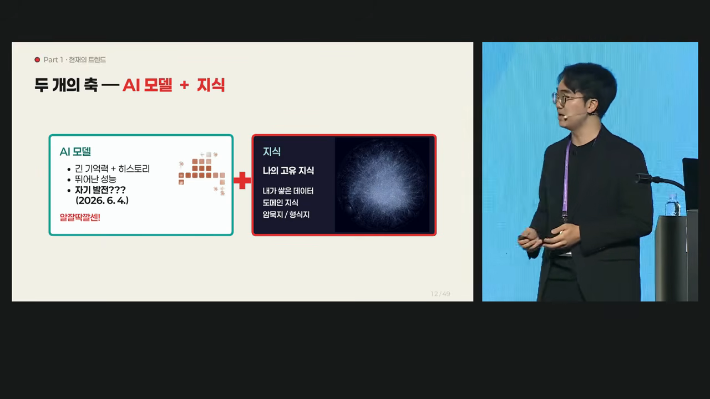
'자기 발전'에 물음표 세 개가 붙은 데는 이유가 있어요. 발표자는 2026년 6월 4일 앤트로픽이 'AI 모델이 스스로 발전할 수 있는 수준이 됐다'고 공개했다고 말해요. 이 날짜와 발표는 발표자가 든 근거이고, 이 문서에서 따로 확인하지는 않았어요.
두 축이 합쳐진 것을 발표자는 '나만의 AI OS의 시대'라고 불러요. 슬라이드 공식은 'AI(툴·프로세스) + KB(나의 지식)'예요. 아래에는 'AGENTIC OS 2.0', 'Claude OS' 같은 유튜브 영상 썸네일이 있어요. 온라인에서 같은 생각을 여러 이름으로 부른다는 뜻이에요.
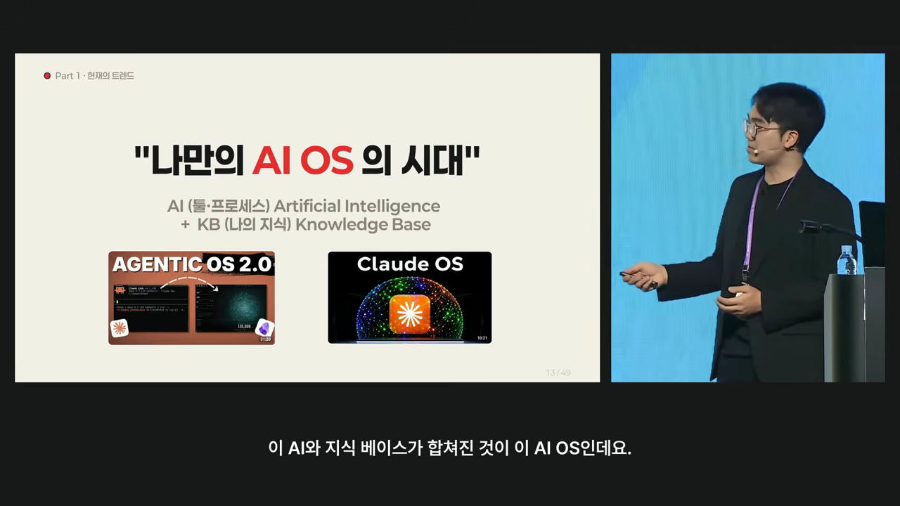
사실, 새로운 게 아니에요
발표자는 이 꿈이 70년도 더 됐다고 강조해요. 1945년 버니바 부시가 제안한 메멕스(Memory Extender)예요. 슬라이드 설명은 '읽고 쓰는 모든 걸 외부 기계가 사람 대신 기억하고 꺼내 준다는 아이디어'예요. 왼쪽 사진이 메멕스 책상 모형, 아래가 부시예요.
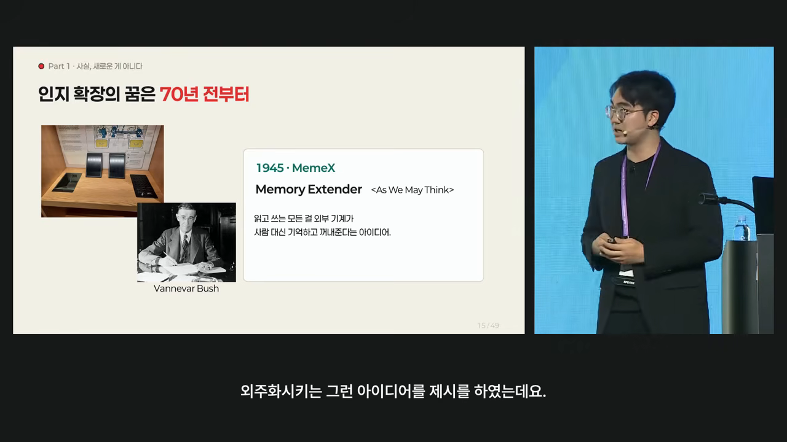
그 뒤로도 지식을 잘 관리하려는 시도는 계속됐어요. 슬라이드 왼쪽 '흩어진 정보'(카톡·드라이브, 이메일·다운로드, 다양한 경로에 산재)가 '휘발되는 우리의 기억'이에요. 이를 '세컨드 브레인 · PKM(Personal Knowledge Management)'으로 한곳에 모아 관리하자는 흐름을 2021년쯤 티아고 포르테가 책으로 대중화했어요. 오른쪽이 그 책 『Building a Second Brain』과 한국어판 『세컨드 브레인』이에요.
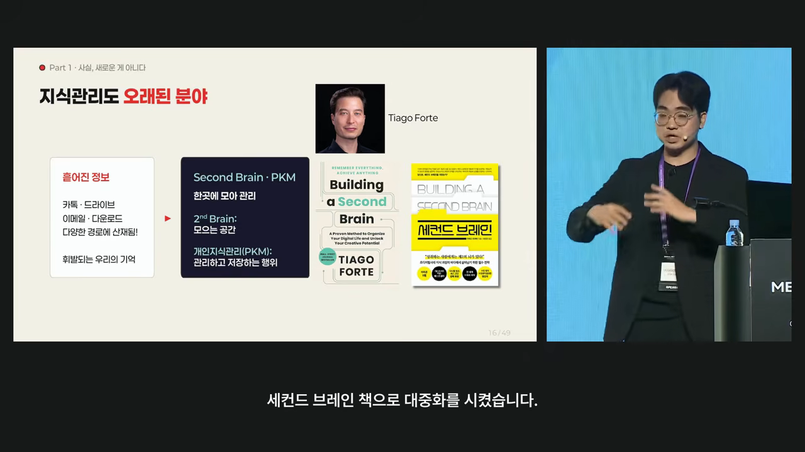
그럼 이번엔 뭐가 다를까요? 왼쪽 '과거 · 정적 도구'에는 '사람이 다 정리·유지해야'라고, 오른쪽 '지금 · AI 학습 + 하네스'에는 '대충 말해도 알아서…, 효율성에 대한 기대 + 환상'이라고 적혀 있어요. 예전 지식관리는 정리하는 수고 때문에 포기하기 쉬웠어요. 이제는 클로드 코드나 헤르메스 에이전트가 그 수고를 맡아요.
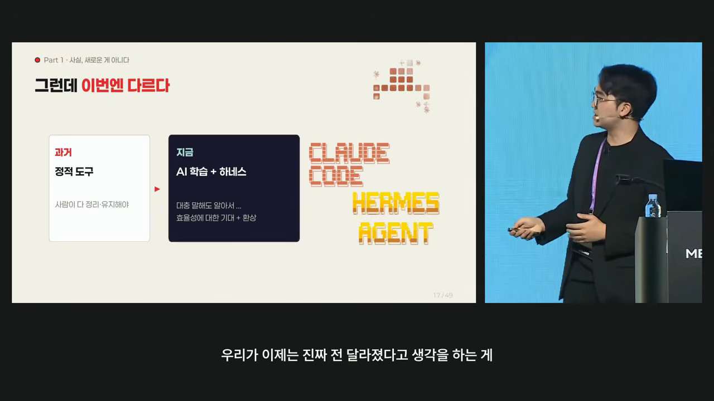
그래서 발표자의 공식은 'PKM × AI = 폭발 → AI OS'예요. 왼쪽 위 '개인지식관리(PKM)'는 1945년부터 이어진 오래된 분야이고, 왼쪽 아래 'AI 에이전트'는 2022년 11월부터의 새 흐름이에요. 둘이 카파시의 LLM 위키에서 만나 '빵 터졌다'는 거예요. 발표자는 앞으로 모든 개인과 조직이 자기 OS를 만드는 속도가 붙을 거라고 봐요.
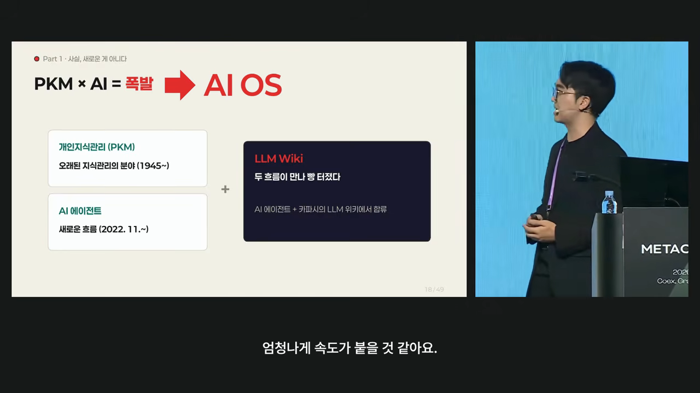
세 개의 두뇌로 보는 AI OS
AI OS, LLM 위키, 에이전트, 세컨드 브레인, 하네스. 슬라이드 왼쪽에 흐리게 나열된 말들이에요. 같은 생각을 가리키는데 부르는 이름이 제각각이에요. 발표자는 이걸 '세 개의 두뇌, Brain Trinity'라는 직관적인 틀 하나로 정리해요. 그의 유튜브 채널 이름이기도 해요.
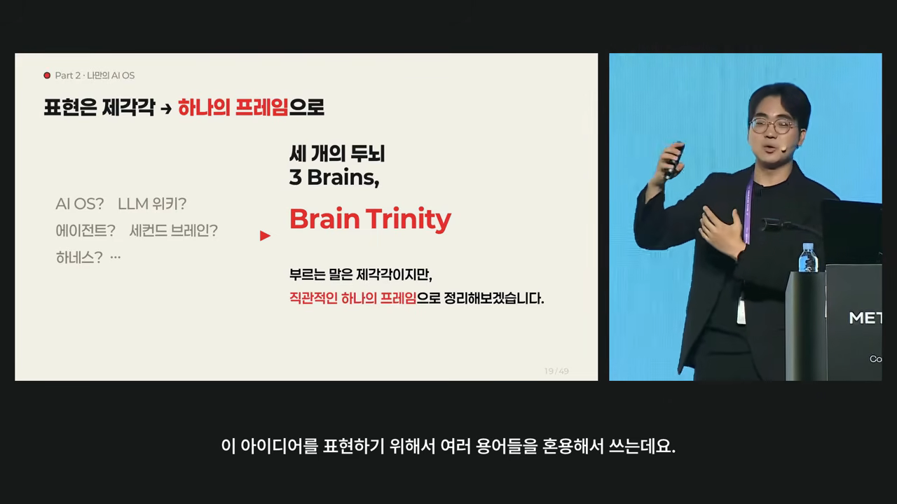
세 두뇌는 위에서부터 '제1의 두뇌 · 나', 왼쪽 아래 노트북 옆 '제2의 두뇌 · 지식', 오른쪽 아래 '제3의 두뇌 · AI'예요. AI를 활용할 때 이 셋이 동시에 작용한다고 해요.
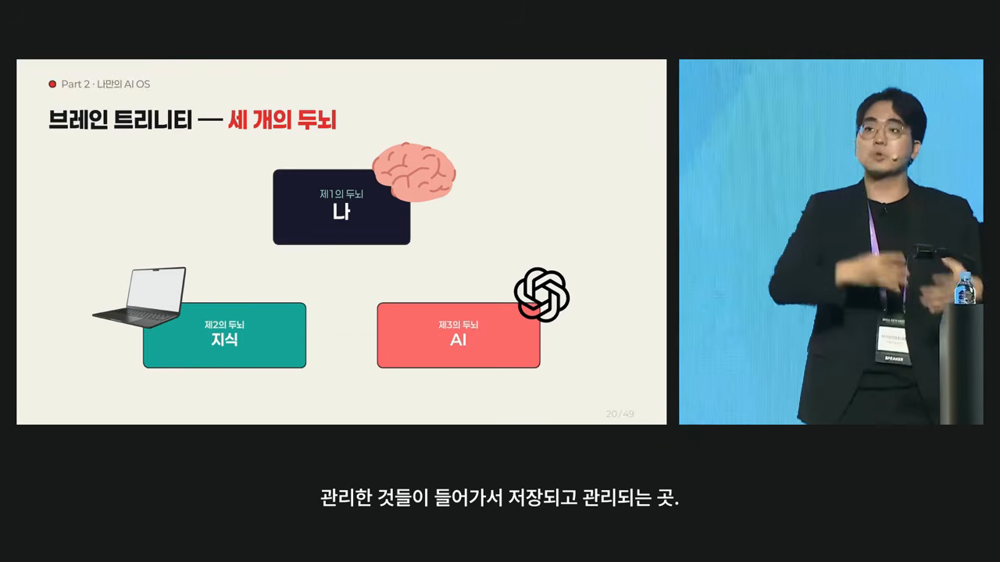
각 두뇌가 맡는 일은 아래 세 칸에 적혀 있어요. 1st·나는 '관찰·판단·영감·결정', 2nd·지식은 '저장·검색·분류', 3rd·AI는 '확장·응용·적용'이에요. 발표자는 무대에서 느끼는 떨림을 예로 들어요. 그 감정은 AI가 느낄 수 없어요. 내가 그 경험을 기록하면 2번째 두뇌에 들어가고, AI는 그 기록을 가지고 확장하고 응용해요.
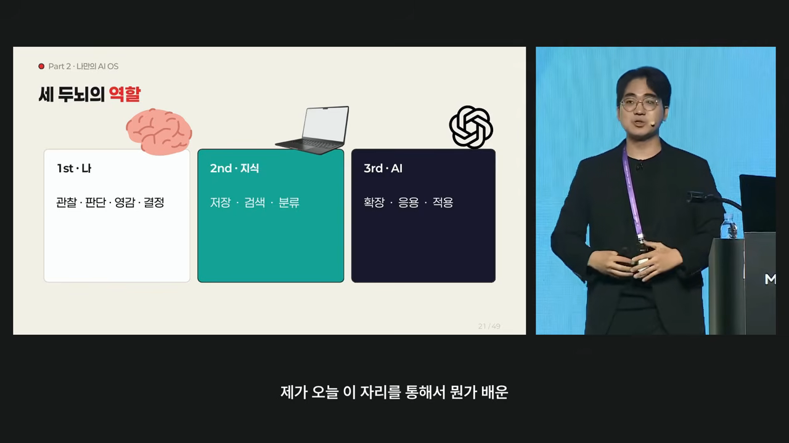
셋이 어떻게 맞물리는지는 다음 슬라이드에 화살표로 그려져 있어요. 부제는 '내가 AI에 명령하면, AI가 제2의 두뇌에 쌓인 지식으로 해낸다'예요. 빨간 화살표는 나→지식 '저장', 지식→AI '활용', 나→AI '명령'이에요. 파란 화살표는 지식→나 '기억 강화', AI→지식 '작성'이에요.
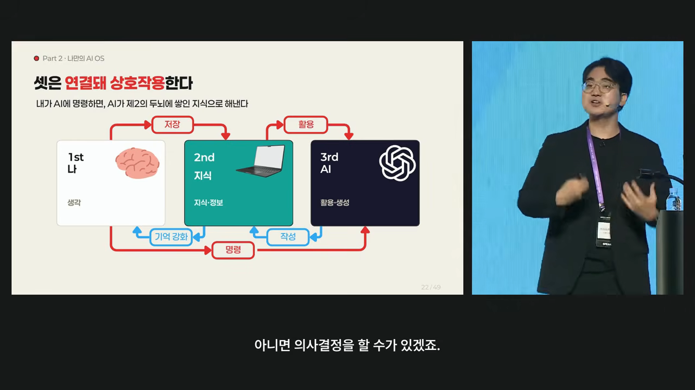
발표자는 이 고리를 맛집 예시로 풀어요. 아래 그림은 발표자가 말로 설명한 순서를 옮긴 거예요.
sequenceDiagram participant Me as 1번째 두뇌 · 나 participant Ob as 2번째 두뇌 · 옵시디언 participant AI as 3번째 두뇌 · AI Me->>Ob: 인터넷에서 본 맛집 저장 Me->>AI: 이번 주말 아내랑 갈 서울 맛집 추천해 줘 AI->>Ob: 지난번 저장한 맛집 꺼내 오기 AI-->>Me: 저장해 둔 곳 중에서 추천 Me->>AI: 계획 세워 줘 AI->>Ob: 계획 문서 작성해 저장 Ob-->>Me: 문서를 보며 기억 강화와 결정
발표자가 안타까워하는 건 관심의 쏠림이에요. 슬라이드에서 1st·나와 2nd·저장은 흐리게, 빨간 테두리 안 3rd·AI만 진하게 그려져 있어요. 그 안의 아이콘은 클로드 코드, 코덱스, 오픈클로, 헤르메스예요. 다들 좋은 도구만 찾지만, 발표자는 어떤 데이터를 쌓고 어떻게 쓰는지가 더 중요하다고 말해요.
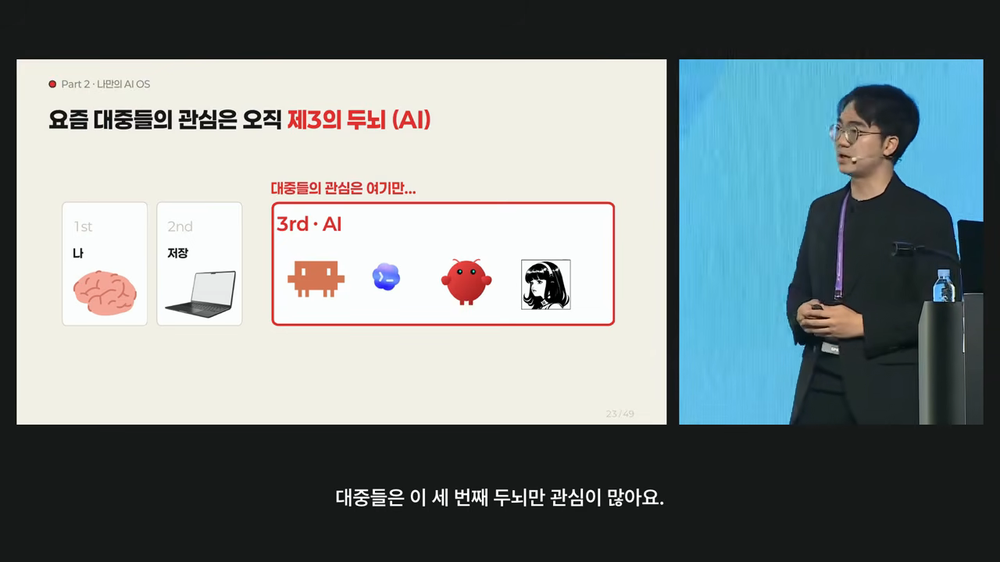
왜 옵시디언일까요?
그래서 발표자는 더 중요한 2번째 두뇌로 넘어가요. 슬라이드 왼쪽 상자는 'Obsidian + Claude Code · 요즘 제일 인기 조합 · 제2의 두뇌로 가장 많이 선택되는 옵시디언, 그 위에 클로드 코드'예요. 오른쪽은 '이 조합이면 두 번째 두뇌가 완성됩니다', 'KNOWS EVERYTHING' 같은 유튜브 썸네일이에요. 청중 가운데 옵시디언을 들어 본 사람은 3분의 1쯤이었어요.
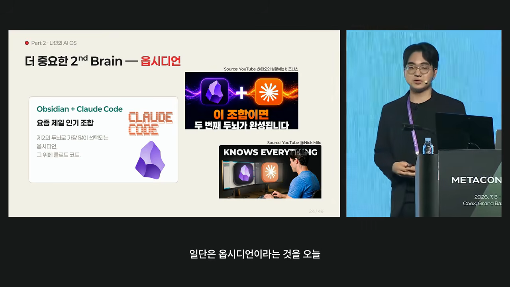
발표자는 옵시디언이 'AI 활용을 위해 최적화된 노트 앱'이라고 말해요. 왼쪽 상자의 세 가지가 그 이유예요. ① 로컬: 내 컴퓨터에 저장, 안전하다. ② 마크다운: AI와의 소통 언어. ③ 무료 + 플러그인 생태계. 오른쪽 검은 상자가 최대 장점인 연결이에요. '노트끼리 이어진다, 두뇌가 생각하는 방식대로 AI도 흩어진 노트를 넘나든다.'
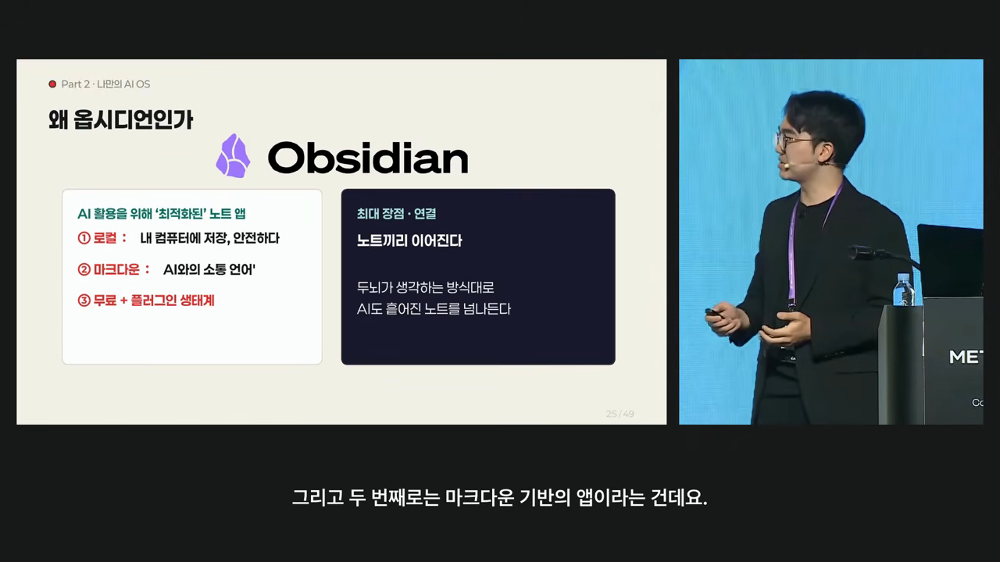
로컬과 마크다운이 합쳐지면 이런 일이 돼요. 클로드 코드나 코덱스는 내 컴퓨터의 파일을 직접 읽어요. 옵시디언 노트는 바로 그 컴퓨터에, AI가 잘 읽는 마크다운으로 저장돼 있어요. 클라우드 노트 앱처럼 내보내기나 연동을 거칠 필요가 없어요. 연결은 사람이 연상하며 생각하는 방식 그대로 기록하게 해 줘요. 그러면 AI도 그 연결을 따라가며 관련 파일을 읽어 와요.
발표자는 2021년부터 옵시디언을 써 왔어요. 슬라이드 오른쪽 상자에는 'Brain Trinity · 제 두뇌 + 제 인생 · 계획·일기·콘텐츠·공부·업무. 이 발표조차 제 AIOS로.'라고 적혀 있어요. 가운데 둥근 덩어리가 노트끼리의 연결을 보여 주는 그래프 뷰예요.
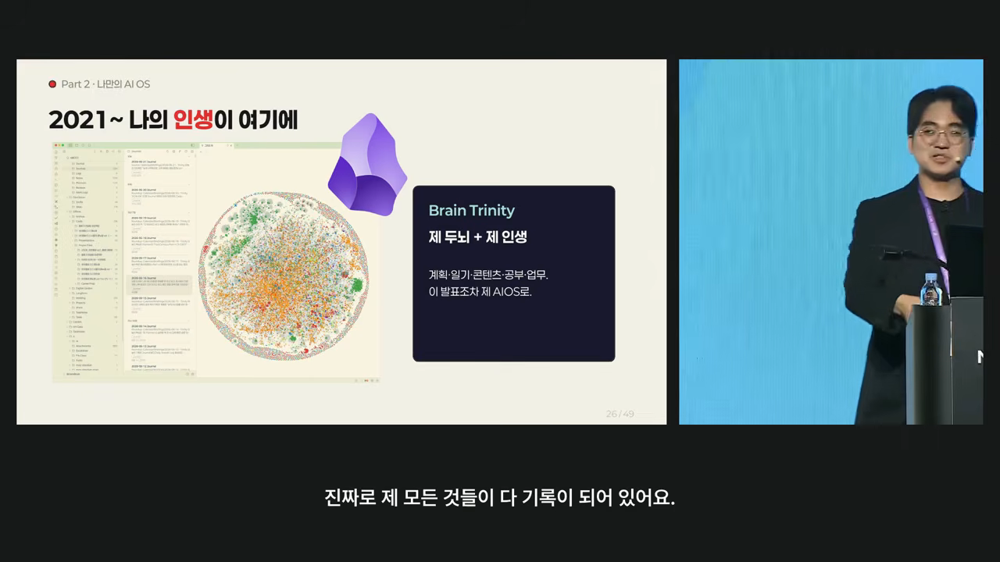
이어서 실제 볼트를 열어 보여 줘요. 왼쪽 폴더 목록에는 Brain(Archive, Brain Trinity, Daily QnA, Knowledge, Me Myself & I, Zettels 등)과 Calendar(AI_Logs, Briefings, Goals, Journal 등)가 보여요. 오른쪽 그래프 뷰의 점 하나하나가 노트예요. 발표자 말로는 이게 2년 치이고, 그 전 2~3년 치는 따로 보관했다고 해요. 새로운 걸 받아들일 때마다 관련 기억과 노트를 하나하나 이어 만든 자신의 두뇌라고 소개해요.
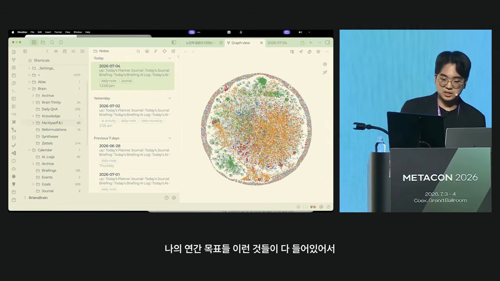
시연: 아침 계획과 지식 기록
여기서부터는 발표자가 실제로 쓰는 장면이에요. 그는 네 가지 쓰임을 준비했어요. 각 시연 슬라이드는 어느 두뇌가 무엇을 맡는지 순서대로 보여 줘요. 네 장을 한 표로 모으면 이래요.
| 시연 | 사람(1번째 두뇌) | AI(3번째 두뇌) | 남는 곳(2번째 두뇌) |
|---|---|---|---|
| ① 아침 계획 세우기 | 오늘의 계획을 물어요 | 헤르메스가 일정·할 일·기록을 보고 우선순위를 정해요 | 옵시디언 플래너, Todo + Calendar 자동 등록 |
| ② 지식 입력·기록 | 클리핑과 음성으로 인사이트를 말해요 | 헤르메스가 구조화하고 자동 정리해요 | 정해진 형식대로 노트에 저장 |
| ③ 콘텐츠 작성 | 아이디어를 발산해요 | 구조화하고 정리해요 | 옵시디언에 기록, 연관 노트와 연결 |
| ④ 자동 회고 | 24시간 활동 데이터를 남겨요 | 하루·주·월·분기·년 단위로 돌아봐요 | 계획과 회고가 함께 쌓여요 |
네 시연 모두 같은 고리를 돌아요. 사람이 던지고, AI가 2번째 두뇌를 읽어 처리하고, 결과가 다시 2번째 두뇌에 쌓여요.
① 아침 계획 세우기
플래너에 오늘 일정과 할 일을 적고 중점을 정하는 건 번거로워요. 슬라이드는 이 과정을 '오늘의 계획(1st Brain) → 헤르메스(3rd Brain) → 옵시디언 기록(2nd Brain) → Todo + Calendar 자동 등록'으로 그려요. 위의 달력·체크·편지 아이콘이 에이전트가 확인하는 일정, 할 일, 메일이에요.
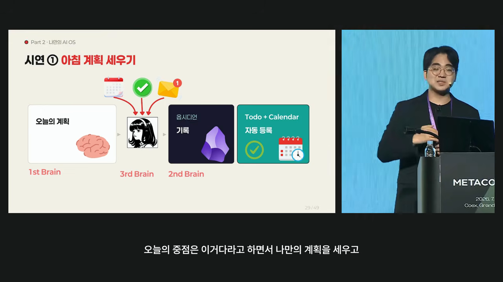
실제 화면은 텔레그램의 'Brainy' 대화창이에요. 발표자가 아침에 집을 나서며 오늘 계획을 세우자고 메시지를 보냈어요. 에이전트는 personal-knowledge-productivity-ops 스킬을 불러와 오늘 계획, 플래너, 브리핑, Todoist 정리 같은 관련 키워드와 파일 위치를 정리해 답해요. 뒤쪽 옵시디언 창에는 Calendar 폴더와 그래프 뷰가 보여요.
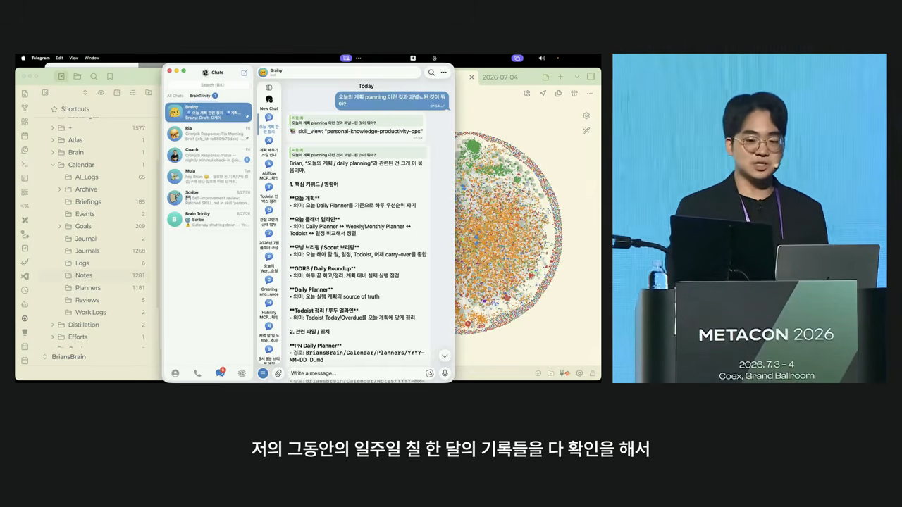
에이전트는 "메타콘 발표 최종 체크와 라이브 시연 체크가 우선순위"라고 답해요. 발표자가 "오케이 플래너에 등록해 줘"라고 하자, 집에 있는 맥미니에서 옵시디언 플래너 파일을 고쳐요. 대화창에는 '12:00 발표 준비 리허설', '계획: METACON 2026 발표 — 40분 + 라이브 시연', 'Planner 반영 위치: BriansBrain/Calendar/Planners/2026-07-04 D.md'가 보이고, 파일을 고치는 patch 기록도 이어져요.
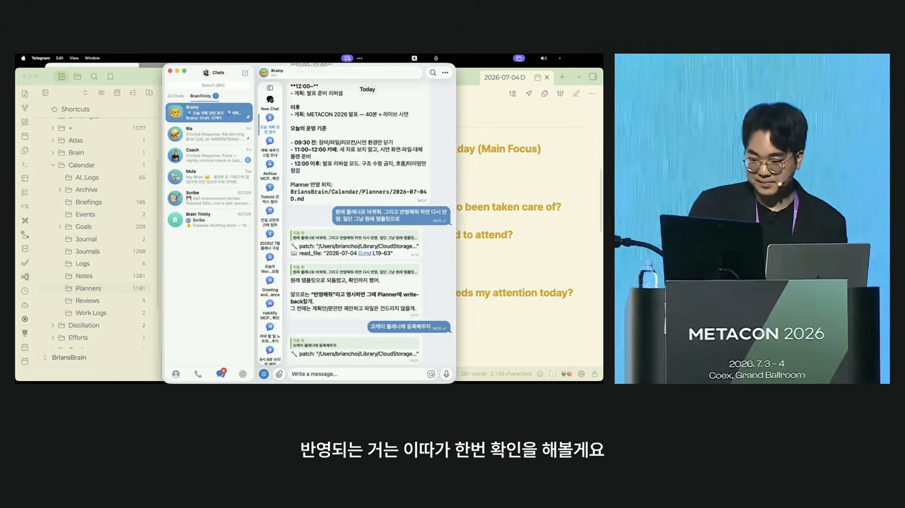
② 지식을 입력하고 기록하기
길에서 영상을 보다 인사이트가 떠오르면 기록해야 해요. 슬라이드 흐름은 '입력: 클리핑 + 음성, 인사이트를 말로(1st Brain) → 헤르메스: 구조화, 자동 정리(3rd Brain) → 노트: 형식대로 저장(2nd Brain)'이에요.
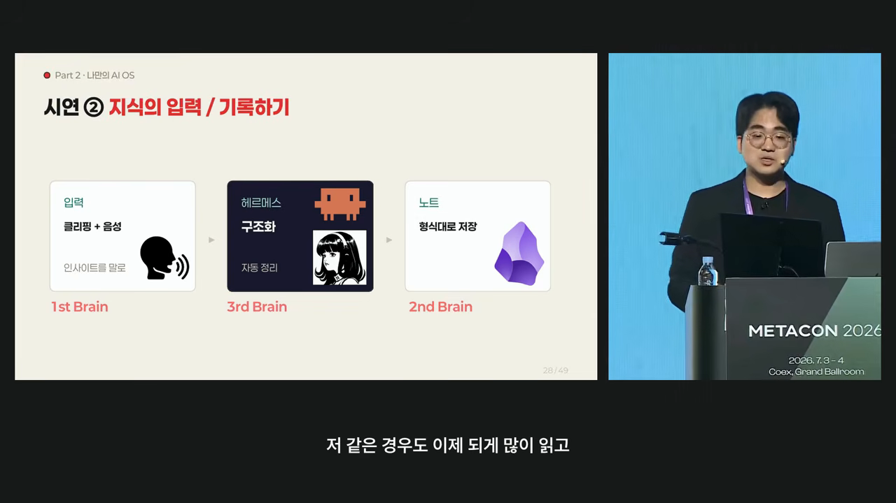
발표자는 매일 아침 7~8시에 오는 롱블랙 뉴스레터를 읽어요. 왼쪽이 인상 깊게 읽은 글 '노인력: 끝없이 더하는 시대에 힘을 뺀다는 것'이에요. 맥시멀리스트인 그에게 '빼고 덜어 내며 살기'라는 메시지가 와닿았어요. 오른쪽 옵시디언 노트 '힘을 빼는 힘, 의식적으로 빼는다는 것 (RAW - 시연용)'이 그가 그냥 막 적은 메모예요.
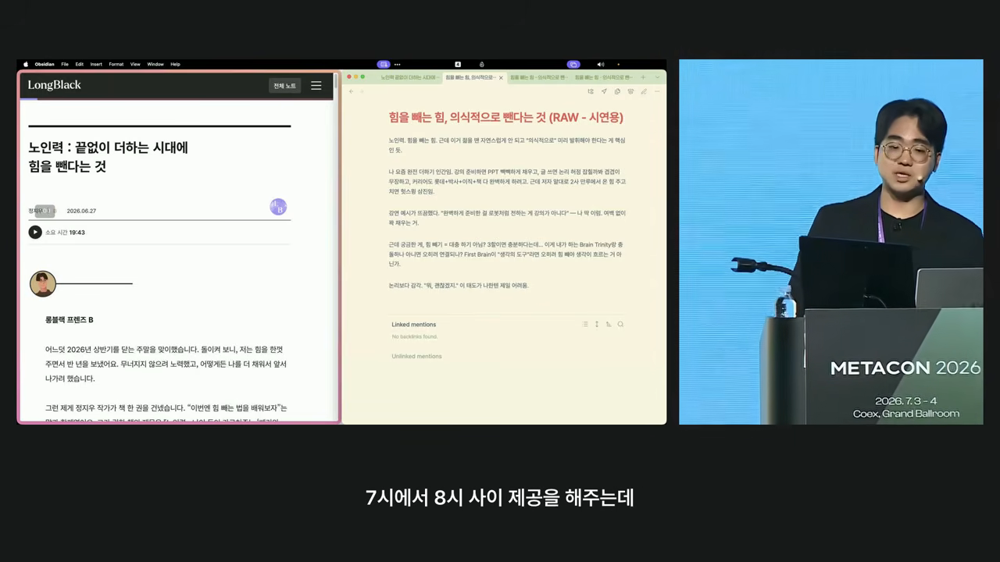
이 메모를 AI가 잘 쓰려면 템플릿대로 정리돼 있어야 해요. 발표자는 음성으로 "노인력 노트를 인상 깊게 읽었어, 정리해 줘"라고 말하고 brain add라고 붙여요. 왼쪽 창에서 AI가 brain-add-seed 스킬을 실행해요. 오른쪽에는 정리된 노트가 생겨요. '원본 소스 및 출처' 아래 'AI 관찰' 칸이 있고, 이어서 '2. 생각 - Resonate 공명 / Amplify 확장'이 붙어요.
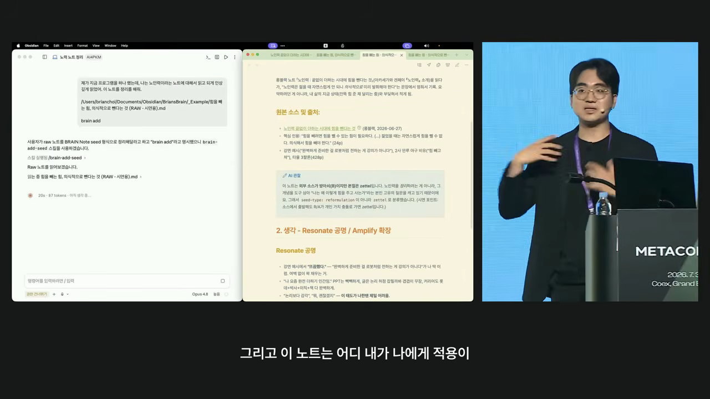
AI 관찰은 "브라이언, 너는 이렇게 적었는데 이건 너의 본질과 닮았어" 같은 덧붙임이에요. 마지막 단계는 연결이에요. 'Integrate 통합' 아래 '연관 / 유사(Similar)'와 '다름 / 반대(Different)'로 나눠, 기존 옵시디언에 있던 관련 노트 링크를 달아 줘요. 이렇게 새 생각 하나가 기존 노트들과 이어지며 넓어져요.
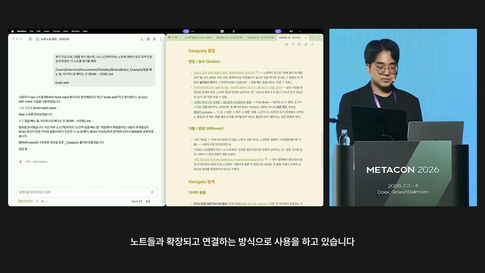
시연: 콘텐츠 작성과 자동 회고
③ 콘텐츠 작성: 발산은 사람, 수렴은 AI
발표자가 가장 많이 하는 일이에요. 그는 자신이 구조화는 어렵지만 발산은 누구보다 잘한다고 말해요. 슬라이드 위 두 칸이 '사람 · 발산 · 흩어진 생각을 막 풀어낸다'와 'AI · 수렴 · 맥락 정리 → 구조화'예요. 아래 네 칸은 '아이디어 발산(1st) → 옵시디언 기록(2nd) → 구조화 + 정리(3rd) → 연관 노트 연결(2nd)' 순서예요.
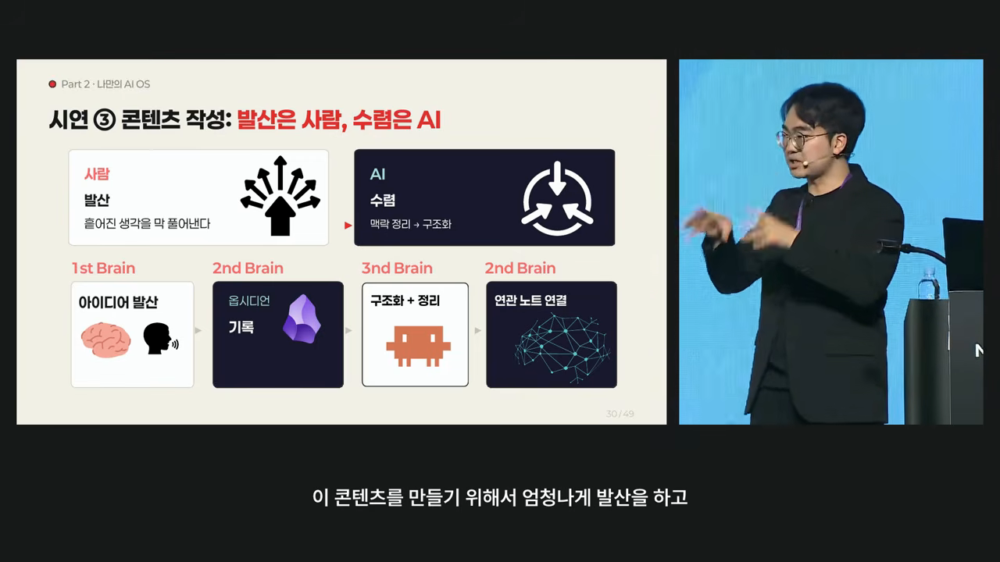
메타콘 발표가 실제 예시예요. 제의를 받은 뒤 30분 동안 의식이 흐르는 대로 담고 싶은 걸 다 말로 쏟아 놓고, AI에게 구조화를 부탁했어요. 화면의 노트 '2026-06-10 메타콘 2026 강연 기획 - Obsidian + AI'에는 '1. Outline'과 '1-1. What is it about?' 아래 행사, 일시·장소, 세션 주제, 형식, 청중이 표로 정리돼 있어요. 이메일 내용이나 연락하며 오간 요점까지 함께 모은 거예요.
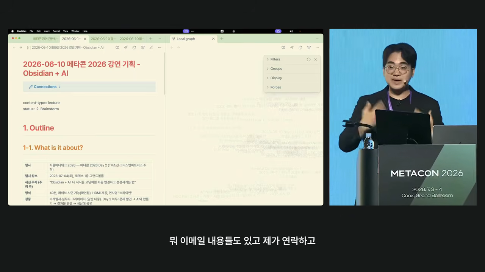
그다음 AI는 메시지별로 기승전결을 생각해 흐름을 짜요. 화면에는 '흐름 ① — 만들기 위해 AI를 쓴다(바이브 코딩)', '흐름 ② — 개인화 비서를 만든다(모바일화)'처럼 이 발표 1부의 흐름이 보여요. 한 번 더 요청하면 슬라이드별 와이어프레임을 만들고, "파워포인트 만들어 줘"라고 하면 초안이 나와요. 초안은 당연히 발표자가 직접 고쳐요.
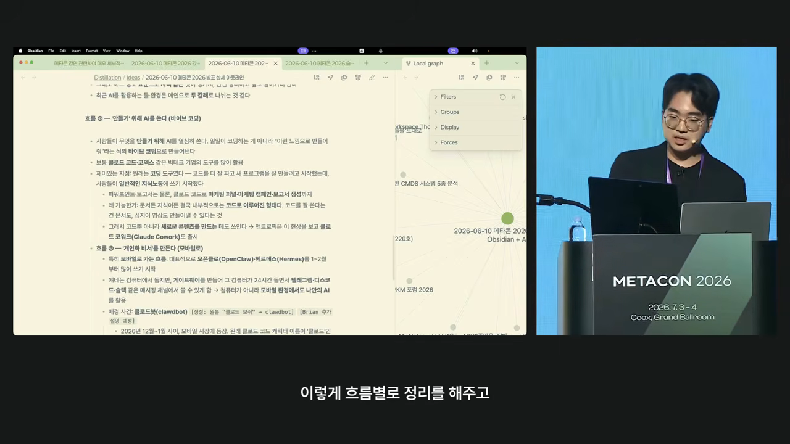
④ 자동 회고
발표자가 가장 많이 쓰는 방법이에요. 그는 라이프 로깅을 해요. 노트북 화면을 1초마다 캡처하고, 목걸이형 녹음기로 24시간 녹음해요. 슬라이드 왼쪽 '24h 기록 · 개인 활동 데이터 수집(녹음·화면 캡처·계획·일정·기록) · 말 안 해도 하루를 돌아본다'가 이 부분이에요. 오른쪽이 '누적 회고 · 하루·주·월·분기·년 · 계획과 회고를 AI와 함께'예요.
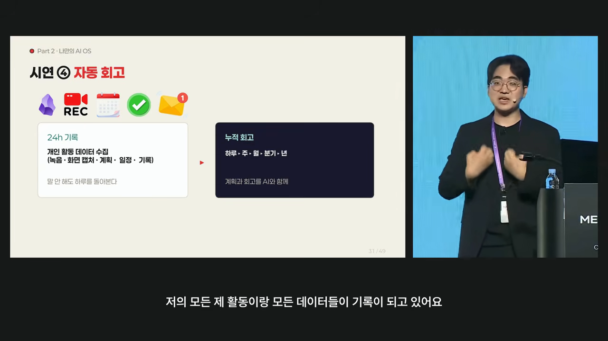
발표자가 말로 설명한 흐름을 그림으로 옮기면 이래요.
flowchart LR A["할 일 앱"] --> R B["휴대폰 사용 내역"] --> R C["일기장"] --> R D["AI와 나눈 대화"] --> R E["컴퓨터 화면 기록"] --> R R["매일 새벽 2시
AI 일일 회고"] --> W["주간 회고"] --> M["월간 회고"] --> Q["분기 회고"] Q --> P["다음 해 계획"]
어제의 회고 노트를 열면 맨 위에 'Source Inventory' 표가 있어요. Personal Planner, Daily Note, AI Log, Journal, Todoist, RescueTime, Toggl, Screenpipe 같은 데이터 출처마다 쓰였는지(used), 비었는지(sparse), 없는지(no-data)를 적어 둬요. 그 아래에 '한 줄 요약'이 이어져요.
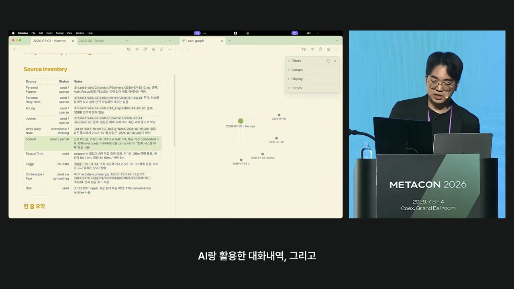
본문에는 '3) Personal / Brain Trinity 관점의 성과', '4) 개인 쪽 열린 고리' 같은 항목이 있어요. 메타콘 발표 준비, 리모컨 배터리 확인 같은 일이 적혀 있어요. 발표자는 저를 아는 다른 사람이 저에 대해 알려 주는 것 같다고 말해요.
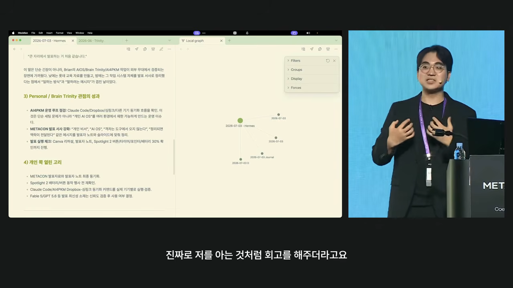
쌓인 데이터로 대시보드도 만들어요. 화면은 2분기 '분기 차트'예요. 왼쪽 'Todoist Overdue 궤적'은 밀린 할 일 수의 변화이고, 오른쪽 '월간 목표 완료율'은 4월 20%, 5월 42%, 6월 45%예요. 아래에는 '월별 시간 투입: 자동 추적 vs 의도적 추적', '월별 강의·발표·교육 이벤트' 칸이 이어져요. 발표자는 3~4월부터 시작해 아직 빠진 데이터가 많다고 덧붙여요.
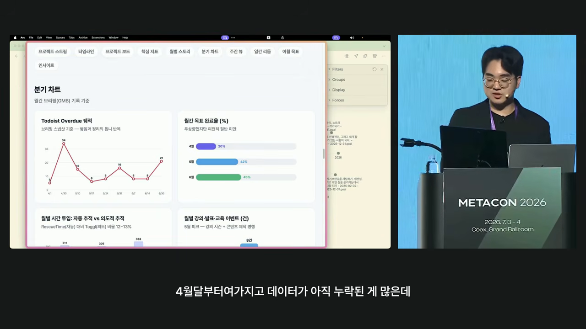
발표자는 자기 사례를 '성찰을 위한 AI OS'라고 정리해요. 슬라이드 세 줄이 그 이유예요. 주로 개인의 성찰을 위해 쓰고, 시간이 제일 가치 있는 자산이며, 디테일까지 기록하면 그 경험이 더 풍성해진다는 거예요.
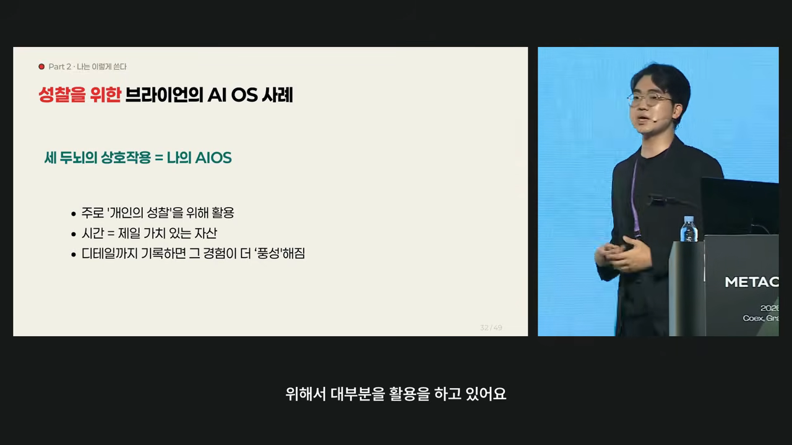
다른 사람들의 AI OS
발표자는 다른 사람들은 다른 목적으로 AI OS를 쓴다며 세 사례를 소개해요.
첫째는 스레드에서 활동하는 김재경(@tofukyung)이에요. 슬라이드 오른쪽 상자에 '캐릭터 페르소나들 · 각 캐릭터가 역할을 갖고, 옵시디언 내용으로 디스코드에서 대화'라고 적혀 있어요. 왼쪽 캡처에는 '코난봇(최신 Claude Code 업데이트 수집)', '팩트체커봇(3개 출처 교차검증 완료)', '에디터봇(초안 작성 시작)' 같은 에이전트가 보여요. 발표자 말로는 카파시, 스티브 잡스 같은 인물끼리 대화를 시켜 의사결정에 도움을 받는다고 해요.
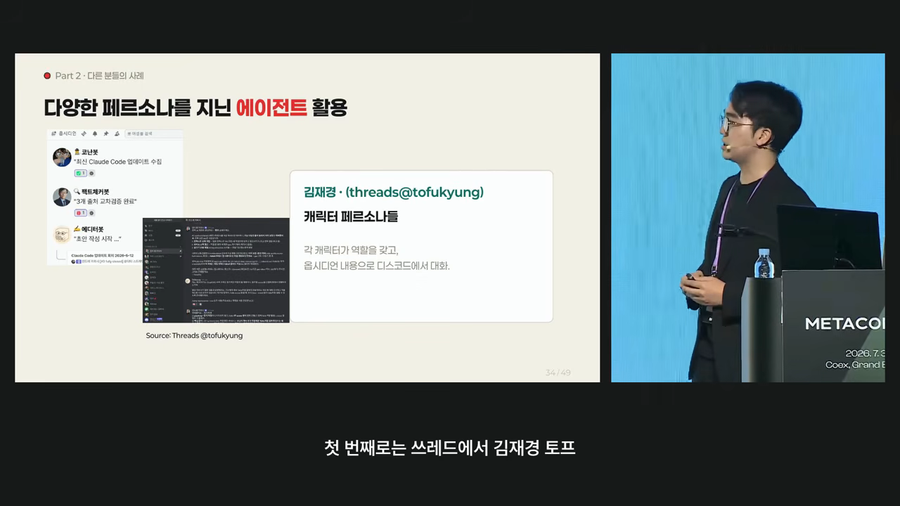
둘째는 국내 최대 AI 커뮤니티 GPTers예요. 슬라이드 제목이 'AI들이 하나의 팀처럼 협업'이에요. 왼쪽 그림이 마스코트 '뽀피터스' 네 마리이고, 각자 MBTI(Myers-Briggs Type Indicator)와 역할(팀장, 운영 시스템, 마케팅, 콘텐츠)이 붙어 있어요. 오른쪽 상자 설명은 'AI마다 각자 역할, 서로 대화 주고받으며 실제 조직처럼 협업'이에요. 오픈클로 기반 에이전트들에게 관련 지식과 역할을 주고 지시하면 서로 알아서 일한다고 해요.
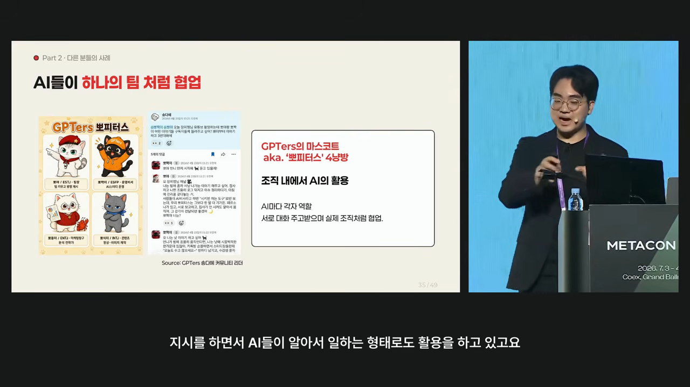
셋째는 한림대 안창현 교수예요. 'AI도 뜯어고치고 옵시디언도 뜯어고쳐' 자기만의 인터페이스를 만들어요. 슬라이드 설명은 '옵시디언+AI 툴에 자기 기능을 만들어 붙임. 예: HWP → 마크다운으로 손실 없이 변환해 주는 도구'예요. 공공기관이 많이 쓰는 한글 파일을 AI가 다룰 수 있게 바꿔 쓰는 거예요. 왼쪽 화면에는 '3-Layer Architecture'라는 구조도가 보여요.
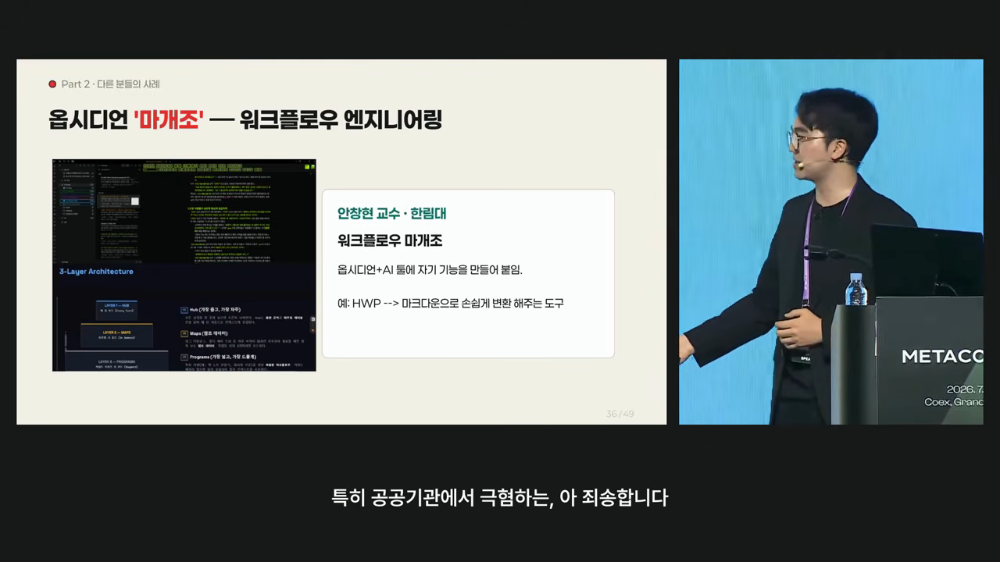
발표자는 이 사례들을 'AI 네이티브 개인·조직이 퍼진다'로 묶어요. 왼쪽에 다시 'AI 모델 + 지식' 두 축이 있고, 오른쪽에 '개인 → 소규모 조직 → 조직', '지식 저장 비용↓ · 모델↑ · 에이전트 간 소통', '+ AI끼리 공유하는 지식의 형태 표준화'가 적혀 있어요. 그 아래 'Introducing the Open Knowledge Format(June 13, 2026)'이라는 글 캡처가 있어요. 발표자는 이 캡처를 말로 따로 설명하지는 않아요.
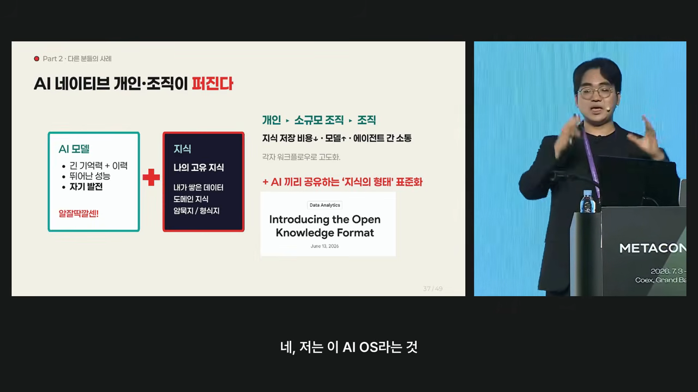
결국 중요한 건 나의 맥락
AI가 이렇게 빨리 가는데 나는 어떻게 해야 할까요? 발표자의 답은 '결국, 나로 돌아간다'예요. 비인간적인 것이 많아질수록 나다움이 더 중요해진다는 거예요. 그는 나다움을 두 가지로 나눠요. 첫째는 내가 아는 지식과 데이터를 AI에게 주는 것, 둘째는 그보다 한 걸음 더 나아가 나의 맥락을 주는 것이에요.
슬라이드는 이 전환을 PKM에서 PCM(Personal Context Management)으로 그려요. 왼쪽 회색이 'PKM · Personal Knowledge Management · 나의 개인 지식', 오른쪽 빨간색이 'PCM · Personal Context Management · 나의 맥락의 지도'예요. 아래 문장이 이유예요. 'AI가 세상 지식을 다 학습한 시대, 남는 건 나만의 것입니다.'
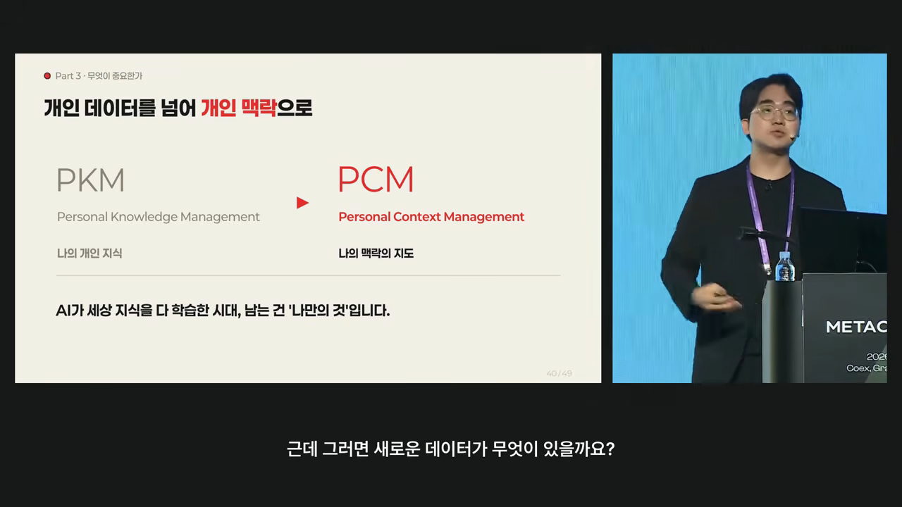
맥락은 '지금 이 순간'이에요
보통은 채팅창에 입력하는 모든 걸 컨텍스트라고 생각해요. 슬라이드 왼쪽 질문도 'AI 모델 안에 들어가는 모든 입력 정보?'예요. 발표자는 일상에서 쓰는 '맥락'의 뜻을 꺼내요. 오른쪽 상자의 '지금, 이 순간'이에요.
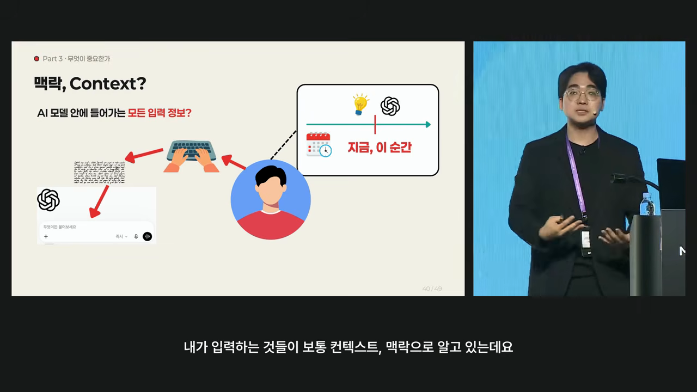
슬라이드 공식은 '나의 맥락 = 지금 + 의도 + 상황'이에요. 발표자는 청중에게 묻어요. "지금 어떤 목적과 기대로 이 자리에 계시나요?" 상자에는 '지금 이 행사장에서 모인 여러분처럼, 내 맥락 ≠ 다른 사람들의 맥락', '주제·기대·7월 4일 토요일 오후, 그 순간 무엇을 하려는지의 의도가 곧 맥락'이라고 적혀 있어요.
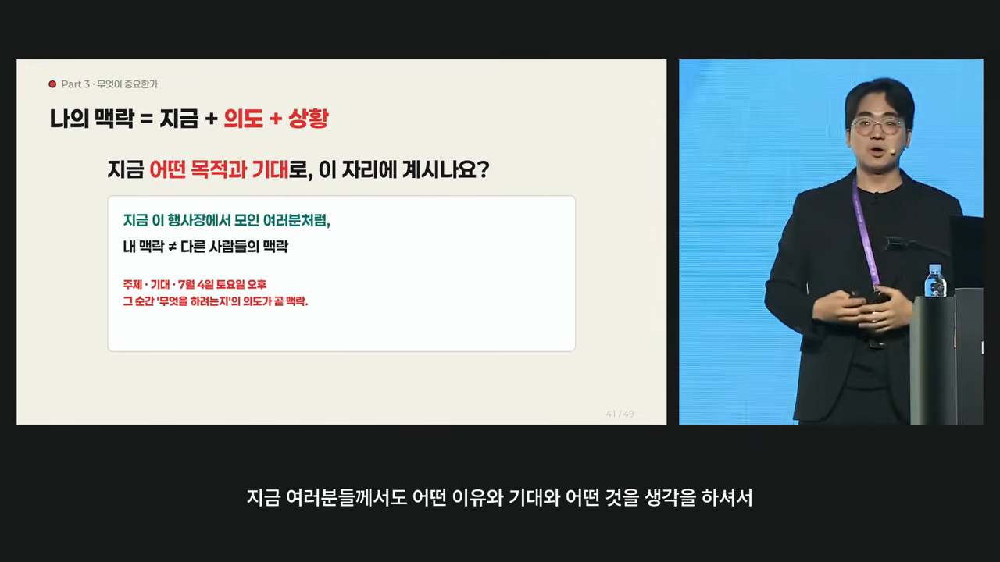
AI에게 줘야 할 맥락은 세 겹이에요. 가운데 원부터 '나(영속)', '프로젝트', '태스크' 순서로 겹쳐 있어요. 오른쪽 상자 설명은 이래요.
- 나 = 영속적 맥락(Persistent): 역할·취향·사고방식. 내가 어떤 사람이고 목표가 무엇인지예요.
- 프로젝트 맥락(Project): 프로젝트·이해관계자·규모. 몇 달 이어지는 큰 일이에요.
- 태스크(Task), 일시적 맥락(Perishable): 지금 이 순간 하려는 것·의도. 프로젝트 안의 여러 작업 중 지금 대화에서 하는 하나예요.
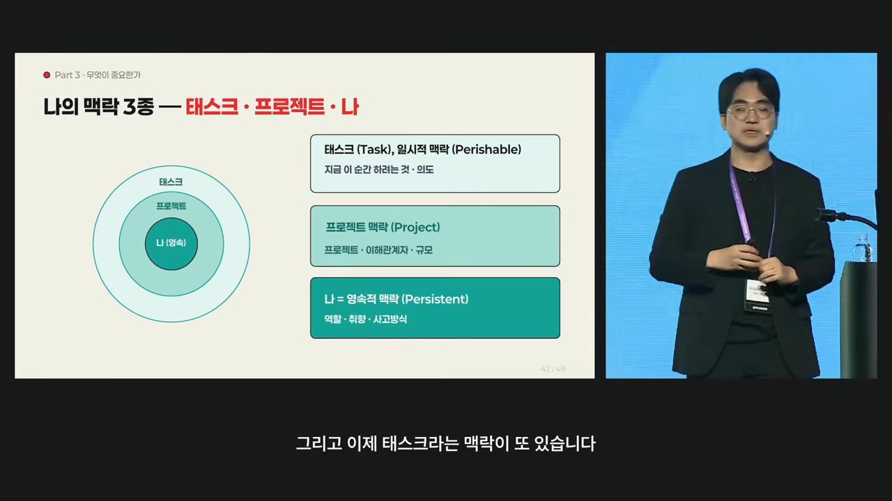
세 겹을 다 줘야 한다는 게 아니에요. 슬라이드 제목이 핵심이에요. '(1) 현재 이 순간, (2) 관련 있는, (3) 나의 맥락만 넣는다.' 왼쪽 '다 때려넣기'는 '혼란·환각, 관련 없는 정보까지 전부'예요. LLM 상자가 빨간 빗금으로 꽉 차 있어요. 오른쪽 '관련 맥락만'은 '정확·생산적, 실수·환각이 줄어든다'이고 LLM 상자에 작은 네모 세 개만 있어요.
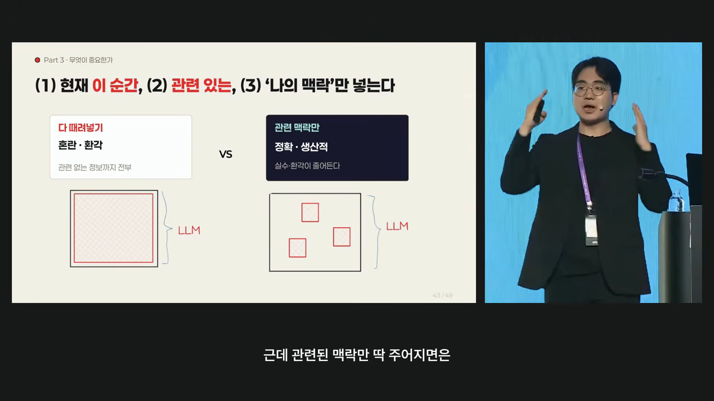
맥락의 지도, MAAP
이 맥락을 AI OS 안에 넣는 방법으로 발표자는 '나의 지도'를 제안해요. 이름이 MAAP이에요. 지도(map)와 발음이 같아요. 슬라이드 왼쪽 상자에 'AI에게 주는 나의 맥락의 지도, M·A·A·P, AIOS 세계지도를 이루는 네 가지 요소'라고 적혀 있고, 오른쪽에는 옵시디언·클로드 코드·헤르메스 아이콘이 얹힌 지도가 있어요.
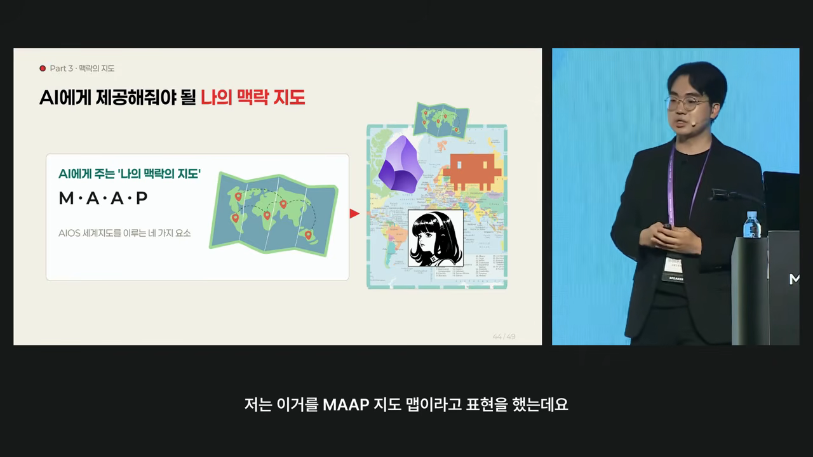
네 요소는 위아래 두 줄로 나뉘어요. 위 줄이 사람의 영역, 아래 줄이 AI의 영역이에요.
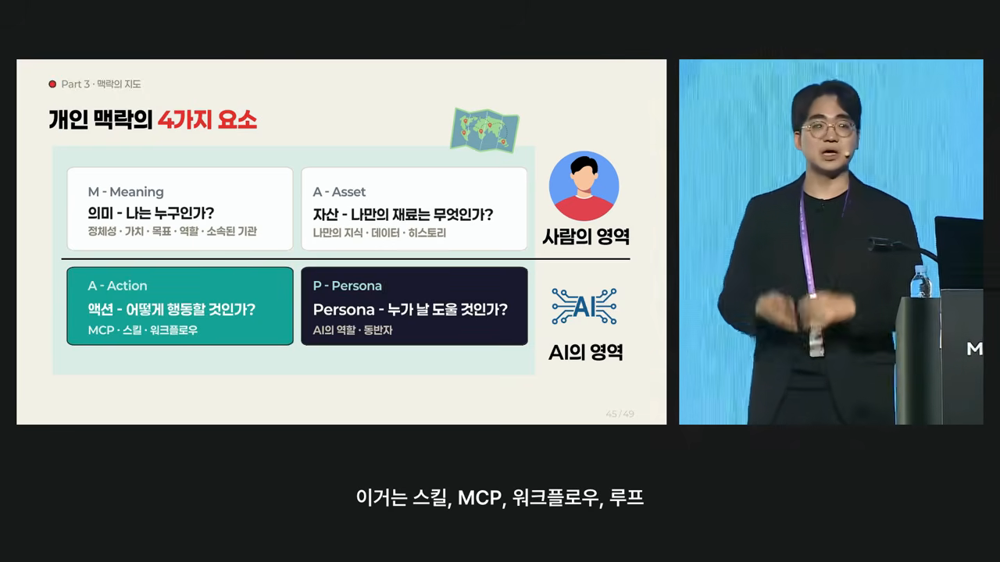
| 요소 | 묻는 것 | 담기는 것 | 영역 |
|---|---|---|---|
| M · Meaning | 나는 누구인가? | 정체성·가치·목표·역할·소속된 기관, 내 일대기를 설명하는 문서 | 사람 |
| A · Asset | 나만의 재료는 무엇인가? | 나만의 지식·데이터·히스토리, 언제든 재활용할 최고의 산출물 | 사람 |
| A · Action | 어떻게 행동할 것인가? | MCP(Model Context Protocol)·스킬·워크플로우·루프 | AI |
| P · Persona | 누가 날 도울 것인가? | AI의 역할·동반자. 나의 클로드 코드, 나의 헤르메스는 어떤 존재인가 | AI |
지도가 주어지면 AI에게 필요한 맥락만 건너가고, 그래야 나를 아는 AI가 된다는 게 발표자의 설명이에요.
개인은 쉽고, 조직은 어려워요
발표자는 개인과 조직의 차이도 짚어요. 왼쪽 '개인 · 단순 · 나만 합의하면 된다', 오른쪽 '조직 · 복잡 · 보안·표준·교육·변화관리'예요. 조직은 데이터가 정리돼 있지 않고, 일하는 방식이 매뉴얼로 남아 있지 않고, 보안 문제도 있어요. 그래서 변화관리가 힘들고 시간이 더 걸린다고 해요.
그래서 마지막 메시지는 '결국, 나다움'이에요. 슬라이드 부제는 '비인간의 시대일수록 가장 인간적인 것으로'예요. 나를 아는 AI를 만들려면 내가 누구인지, 무엇을 좋아하는지, 어떤 우선순위를 갖고 있는지 알아야 해요. 그걸 AI에게 건네야 클로드 코드든 코덱스든 어떤 도구로도 나를 아는 AI를 만들 수 있어요.
결국에는 우리가 AI OS를 만드는 게 나의 맥락으로 평생 성장하는 나의 시스템 그러니까 그냥 한 번 쓰는 게 아니고요.
— 영상 38:49
발표자는 모델을 갈아 치우거나 다른 에이전트를 써도, 나의 맥락으로 자라는 시스템은 계속 강해진다고 말해요. 마지막 슬라이드는 '당신만의 AI OS를 만드세요'예요. 아래 문장은 '당신만의 맥락으로 평생 성장하는 AI 워크스페이스로 세상에 의미 있는 변화를 만들어내길 바랍니다'예요.